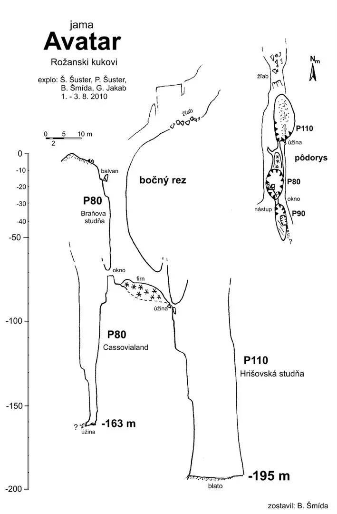

Sa snijegom u noći u Avatar ću poći
Piše: Marko Rakovac Foto: Marko Rakovac, Matea Talaja Za vrijeme ekspedicije “Lukina jama 2010.” godine (u organizaciji PDS Velebit) jamu Avatar su prilikom dana odmora i rekognosciranja terena pronašli engleski i…

Piše: Marko Rakovac
Foto: Marko Rakovac, Matea Talaja
Za vrijeme ekspedicije “Lukina jama 2010.” godine (u organizaciji PDS Velebit) jamu Avatar su prilikom dana odmora i rekognosciranja terena pronašli engleski i slovački speleolozi. Istražili su je do dubine od -195 m i odtad nitko od speleologa nije ju posjetio niti nastavio istraživanja u istoj. Ove godine na ekspediciji “Rožanski kukovi 2014.”, speleolozi SO PDS Velebita pronašli su ulaz u jamu Avatar.
Zadnji vikend u listopadu (26.-27.10.2014.) ekipa špiljara u sastavu Stjepan Dubac, Marin Mustapić, Marko Rakovac (SO Velebit) i Matea Talaja (SO Željezničar) uputili su se na Sj. Velebit do jame Avatar na istočnim padinama Krajačevog kuka. Nakon ritualne pive u Manjanu (Krasno), smještamo se na najljepšu kršku udolinu Sjevernog Velebita – Veliki Lubenovac.
U subotu “čedovski” pronalazimo Englesku jame od koje slijedimo (ljetos) postavljene čunjiće do Avatara. Nakon više sati hoda pod punom speleološkom opremom i ispenjane dvije velebitske sniježne grape predvečer stižemo na ulaz Avatara.
Odmah se spremamo za ulaz u jamu i na -5°C promočeni do kože se grijemo uz šalicu tople cedevite, sušeći rukavice na kuhalu. Izmoreni od puta, transporta, mokrog snijega i hladnoće u 19 h navečer nadobudno pjevamo “Po oluji i buri” paradoksalno vjerujući da ćemo izvući vlagu iz kostiju kad uđemo u jamu i da će biti toplije za barem 10°C . U tom trenutku nitko od nas više nije bio sposoban dobro procijeniti koliko će sve to potrajati. Nepokolebljiva vjera u špiljarski mazohizam i mladenačka snaga procijenjuju: “Do jutra.”
Međutim, u tragikomičnom trenutku dolazi do deus ex machina (ne)željenog prevrata:
Marin uznemireno urla: “Gdje je torbica sa spitovima i fiksevima?!”
- “Pa u transportnoj, tupane!” – odgovaramo mu. “Marko, rekao sam ti da sve nosimo, a ti baš moraš sve vadit' i razmještat! Konju!”.
Dolazi nam u glavu stih iz pjesme Pročelnikov blues: “U jednu ruku imaš pravo, u drugu ti se ja pokakam!” Onemoćali, promrzli i demotivirani ostajemo u neizvjesnosti velebitske noći svi sa istim pitanjem: gdje je torbica sa fiksevima i kako ćemo u jamu?
Spuštamo se u dolinu Lubenovca i pronalazimo torbicu u gepeku auta. U našem malom skloništu kujemo novi plan: ustajemo u 6h ujutro i nakon doručka krećemo na jamu. Tako i bi – štreberski. Srećom, tu noć se je prebacivao sat na zimsko vrijeme i dobismo extra sat spavanja. Prečacem stižemo do jame za 40 min i uživamo u zimskoj idili Velebita sa krckanjem snježne korice pod gojzericama.
Marin i Stjepan postavljaju jamu, Matea i Marko crtaju. Uskoro stižemo na suženje na dubini od 160 m gdje su po priči stali prethodni speleolozi.
Pomičemo par glonđi i gledamo u suženje iz kojeg puše. Podsjeća nas to na Meduzu, Lukinu jamu i jamu Velebitu – ulazna vertikala i prvi meandar na sličnoj dubini kojeg treba proširiti. Odmah nam je u glavi zazvonio komentar slovačkog speleologa Šmide o Avataru: “To je Lukina jama na Krajčevom kuku”. Sretni da smo pronašli suženje, raspremamo jamu i jurimo na topli čaj u Manjan. U sitne večernje sate stižemo u Zagreb – neki na burek, neki na pivo ali svi sa obnovljenim žarom za špiljarenje.
Plamičak Velebita još gori.
[gallery ids="607,608,609,610,611,612,613,614,615,616,617,618,619" type="rectangular"]